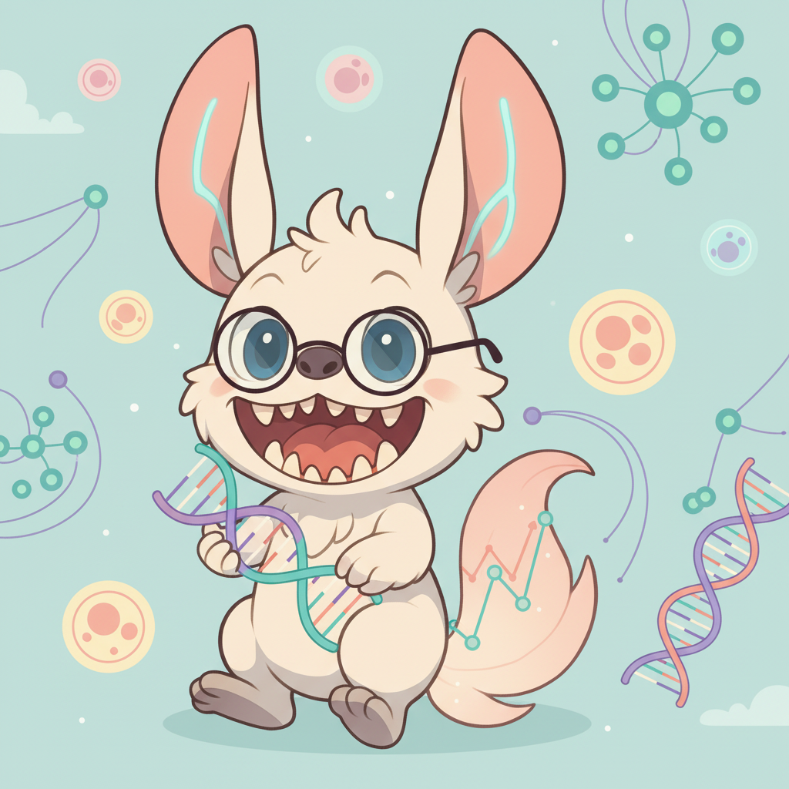

üߨ AI4Bio Knowledge Hub
Computational Biology & Machine Learning Tutorials
Welcome to my personal learning hub. Here I document key concepts, algorithms, and insights in bioinformatics. Explore tutorials on single-cell analysis, deep learning architectures, and statistical methods.
üê≠ Meet Healshu (Â∏åʨß-Ëàí) ‚Äî Inspired by the mythical Ershu from ±±Êµ∑Áªè.
They spend their days listening to the whispers of cells, using algorithms to decode biological secrets.
When a pattern is found, you might hear a soft "hew-hew~".
7
Tutorials
4
Core Topics
∞
Learning
Single-Cell Analysis
Decoding cellular heterogeneity, dynamics, and perturbations
Trajectory Inference Overview
Understand Pseudotime, RNA velocity, and lineage tracing algorithms.
Perturbation Modeling
Computational methods for predicting cellular responses to CRISPR or drugs.
Drug Response Prediction
Updated
Deep learning approaches for predicting drug sensitivity at single-cell resolution.
Multi-Omics Integration
Frameworks for integrating RNA, ATAC, protein, and spatial transcriptomics.
Genomics & Variant Analysis
Sequence modeling and genome engineering
Content In Development
Tutorials on DNA language models and Variant Effect Prediction are currently being written.
Get notified when readyMathematical Foundations
The math toolkit powering computational biology
Foundation Models & DL
Large-scale pre-training for biological systems
Attention Mechanisms
NEW
Master self-attention, multi-head attention, and how Transformers weigh sequence importance.
Neural Architectures
Deep dive into CNNs, RNNs, and Transformers applied to biological sequences.
Essential Resources
Foundational statistics and references